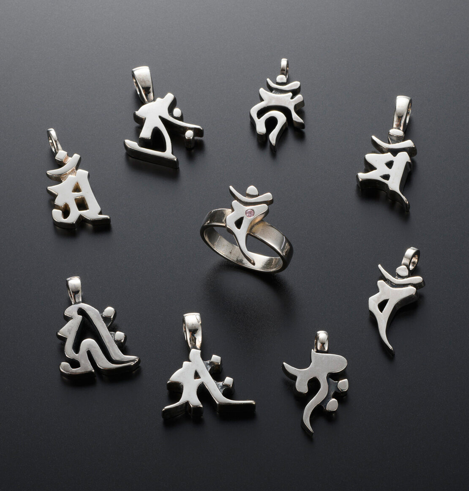
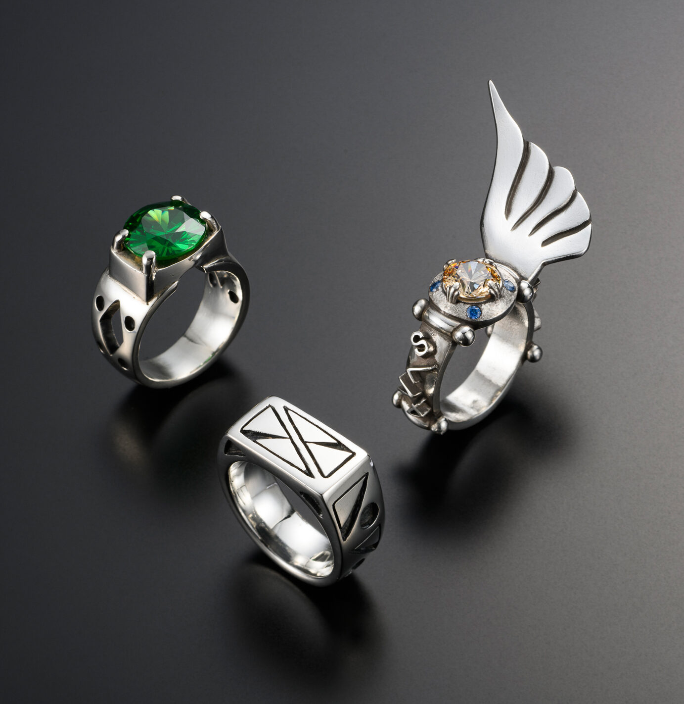
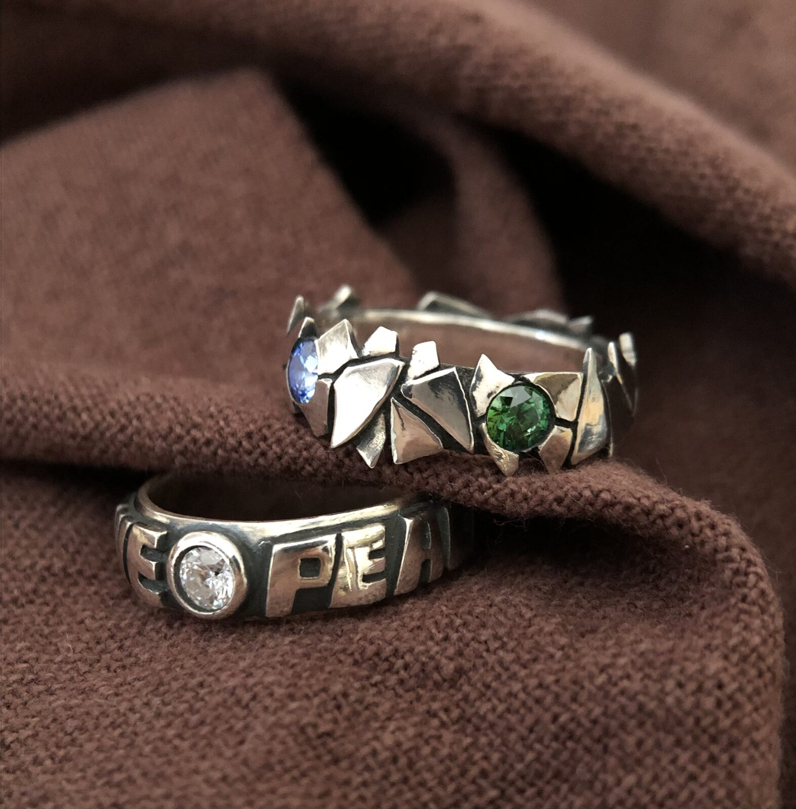
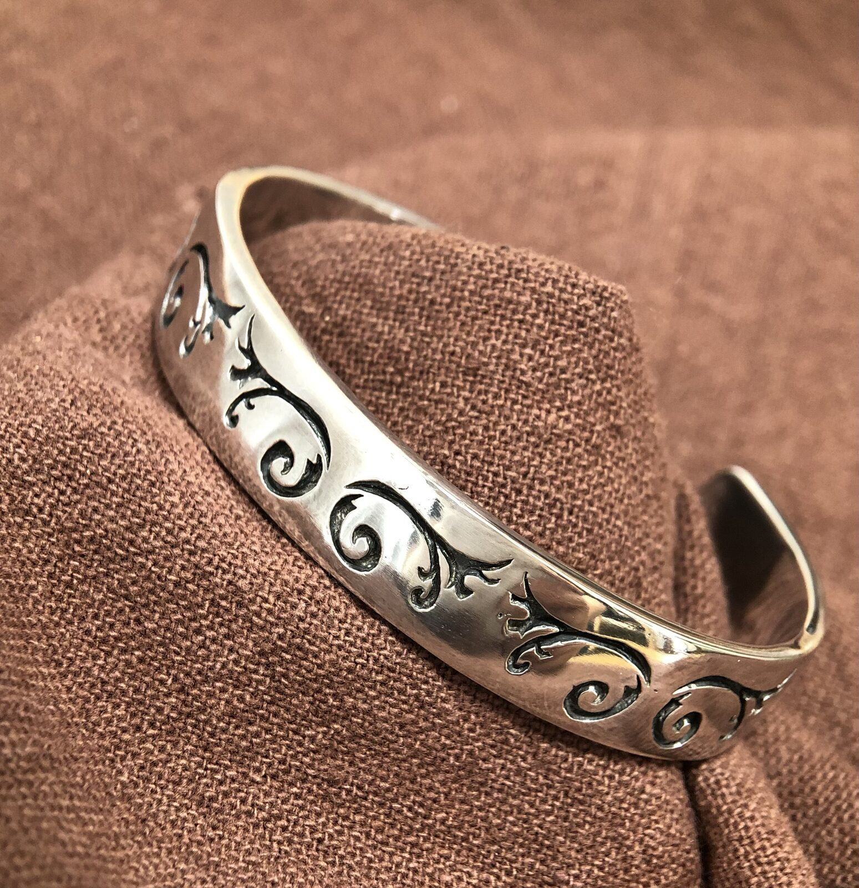

梵字を纏う、ペンダント&リング一式
一文字ずつ異なる梵字を、独自の造形へと落とし込んだシリーズ。入選作品。
1F ― SILVER ACCESSORY
HAND-FABRICATED SILVER JEWELRY
ジュエラーとして培ってきた感覚を最大限に生かし、手のひらサイズの世界に思いを込める仕事です。一点物としての強度と再現性を見据えた造形、その両方を大切にしています。コンペティションでの入賞・入選歴に、講師歴もあります。

梵字を纏う、ペンダント&リング一式
一文字ずつ異なる梵字を、独自の造形へと落とし込んだシリーズ。入選作品。

幾何学とストーリーを宿すリング三種
異なるアプローチのリング。どれにもストーリー性を感じます。入選作品。

石を抱く、無骨な帯のリング二点
規則正しいカットではなく、割れたような面の連なりに石を留める。もう一方には、言葉を彫り込んだ一体。

唐草模様のバングル
燻し処理で陰影を効かせた、伝統的な唐草の彫り込み。手に取ったときの重みも、意匠のひとつです。
このジャンルのお問い合わせ・お仕事依頼は、件名にジャンルを記入の上、ここからお願いします。
お問い合わせする